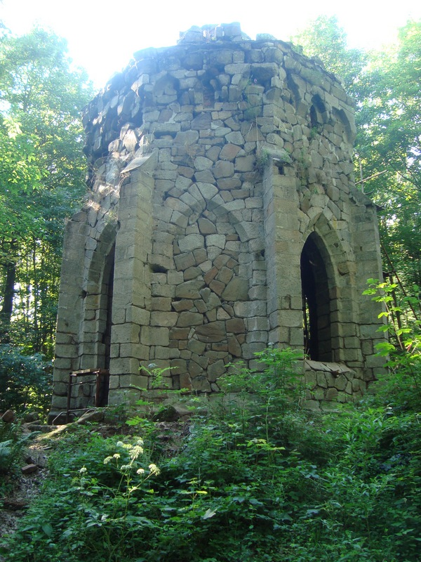
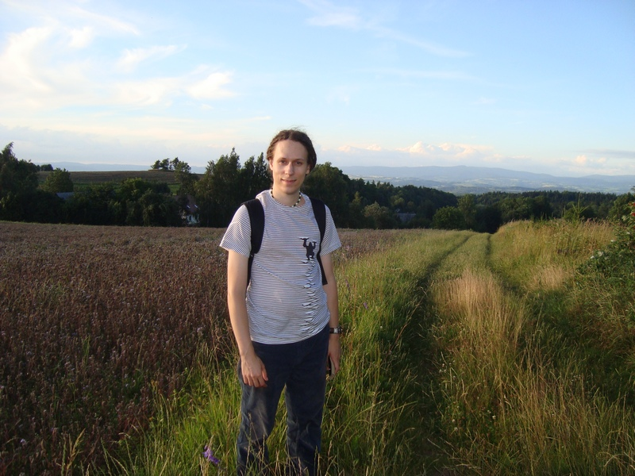
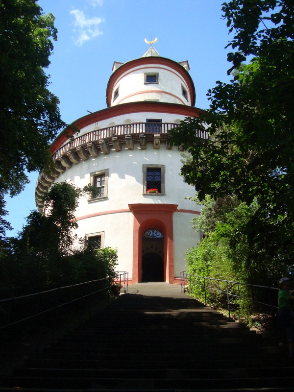
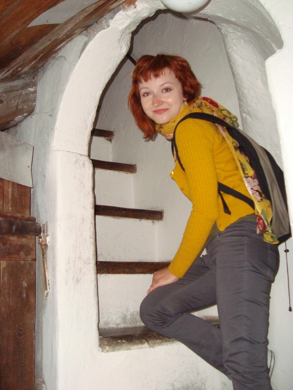
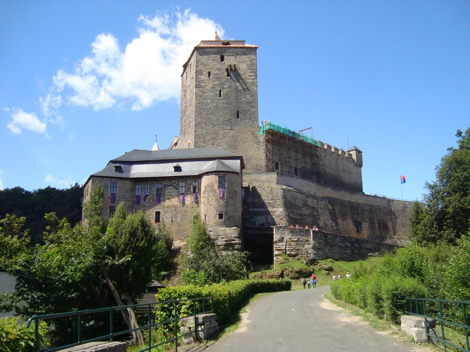
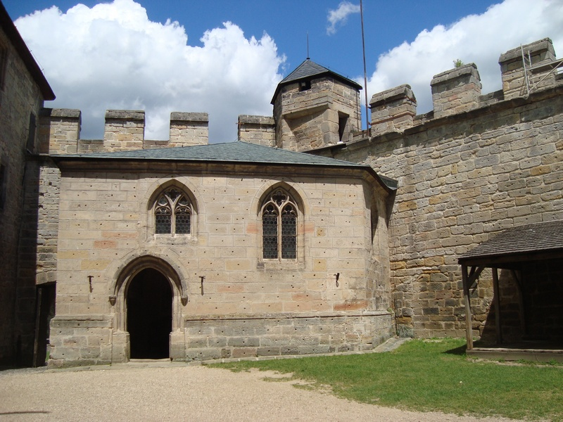
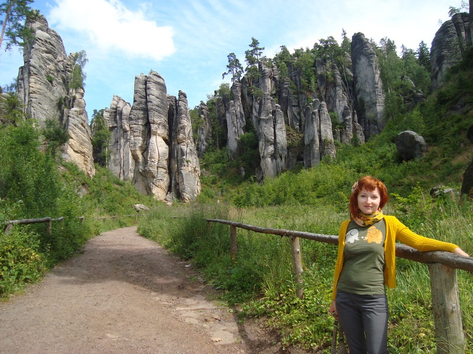
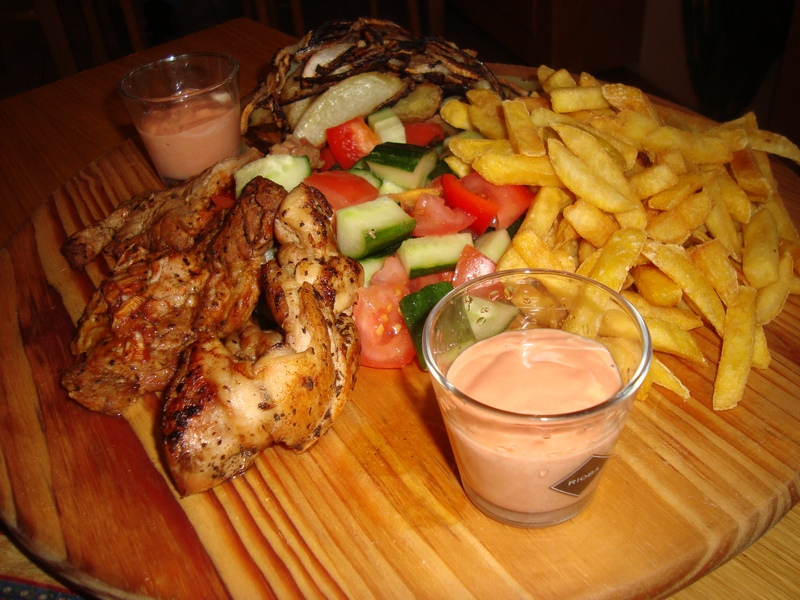

Je to přesně třináct let, co jsem toto krásné zákoutí naší země navštívila poprvé, a už tenkrát se mi tam moc líbilo. Krom zajímavých skalních útvarů a přírodních krás nabízí spoustu možností k výletům také milovníkům historie. Nachází se zde tolik hradů, zámků a zřícenin, že by člověk potřeboval alespoň měsíc na to, aby je stihnul všechny navštívit. Protože Mládkův song o Prachovských skalách je příliš provařený, zvolila jsem na uvedení dnešního toulavého článku starého dobrého Káju. A vy jste se už určitě dovtípili, že tentokrát jsme se s Péťou toulali po Českém ráji :-)…
Pobyt jsme sehnali již klasicky přes Slevomat - původně byl určen jen na 2 noci, proto jsme pořídili vouchery rovnou dva a dovolenou si tak prodloužili na 5 dnů, což už je solidní doba na to, abychom stihli v Českém ráji navštívit ta nejzajímavější místa. Náš penzion se nacházel v Lomnici nad Popelkou, přímo na vrcholu Tábor, kde dříve stávala rozhledna s turistickou chatou. Ta se před pár lety konečně dočkala rekonstrukce a dnes zde najdete příjemný penzionek s opět přístupnou rozhlednou.

Protože první den jsme dorazili až pozdě odpoledne, rozhodli jsme se vyrazit jen na menší výšlap k Allainově věži a na nedalekou zříceninu hradu Kozlov.

Allainova věž
Byla jsem docela zklamaná, že z hradu toho krom hromady kamení, hradního příkopu a tajemného vchodu do podzemí, o kterém se dodnes spekuluje, k čemu vlastně sloužil, moc nezbylo. Výlet to byl ale pěkný a místo večeře jsme se nakrmili v lese spoustou malin a rybízu :D. Prohlédli jsme si také část vesnice Košov, ve které se, stejně jako ve spoustě okolních vesnic, zachovala řada pěkných roubených chaloupek. Byť se jednalo o ne příliš dlouhý výšlap, docela nás zničil a brzy po návratu jsme znaveni odpadli (jistý podíl viny na tom nejspíš měla i lahev růžového vína :D…)

No není to ráj :)?
Druhý den jsme se rozhodli navštívit rovnou tři zajímavá místa. Nejprve jsme vyrazili do Sobotky, kde se nachází lovecký zámek Humprecht, který byl postaven v letech 1666-68 pro hraběte Humprechta Jana Černína z Chudenic. Zámek má netypický tvar dvou elipsoidů, a jelikož se nachází na návrší nad Sobotkou, je už z dálky k nepřehlédnutí. Původně jsme ani neměli v plánu jít se podívat dovnitř, ale náhodou jsme se trefili zrovna do začátku prohlídky, a tak jsme se rozhodli, že se připojíme.

Humprecht
Krom stálé expozice jsme si zaplatili také vstup na věž, do které vedlo poměrně příkré adrenalinové schodiště. Vědět to dopředu, asi si tu věž ještě rozmyslím - teď už se ale nedalo nic dělat :D… Výhled na Sobotku i nedaleký hrad Kost ale stál zato :-).

Vstup do věže
Na Kost koneckonců vedla i naše příští cesta. Kost, která v současnosti patří rodu Kinských, je jedním z nejzachovalejších středověkých hradů v Čechách a i navzdory rekonstrukci si zachovala své mimořádné kouzlo.

Kost
Nemohli jsme se rozhodnout, jestli navštívíme hlavní expozici nebo mučírnu s výkladem o českém právu trestním, ale protože prohlídka hlavního okruhu začínala za pár minut, rozhodli jsme se nakonec pro ni. Příště už ale určitě do mučírny půjdeme :-)!

Hradní kaple
Na Kosti se nám poprvé podařilo obelstít placená parkoviště, která se bohužel v Českém ráji nachází úplně všude. Na druhou stranu je však téměř všude možné nějakým způsobem se jim vyhnout. Tady na Kosti jsme problém vyřešili tak, že jsme nadrzo zaparkovali na volném plácku přímo podél parkoviště :D. Po zajímavé prohlídce jsme se vydali ještě směrem k údolí Plakánek, kde se právě konaly rytířské souboje, pro kešku. V hustých lesích jsme kromě kešky objevili přímo borůvkové moře a opět jsme se s modrými ústy utvrdili v tom, že místní lesy jsou velmi plodné :D!
Naší poslední zastávkou se stala (právem) turisticky nejprofláklejší oblast Českého ráje - Prachovské skály. Tady nejspíš své vyprávění pro dnešek ukončím a přidám odsud ještě několik fotek, které bylo opravdu těžké navybírat. Jestli vás nenavnadí hrady a zámky, tato krása vytvořená přírodou vás v Českém ráji ohromí zcela jistě…

V Prachovských skalách


No, a na závěr si trochu uděláme chutě :D… V ceně voucheru bylo několik dalších bonusů jako možnost návštěvy sauny, welcome drink a také báječná tříchodová večeře s vínkem. Na talíři chybí jedno maso, na které jsem se hladově vrhla, než jsem si stačila uvědomit, že bychom si mohli naši večeři vyfotit, tak pardón :D…

Mňamka
A to už je opravdu konec. O dalších krásách Českého ráje zase někdy příště :)…
Komentáře (9)
Komentáře jsou uzavřené.